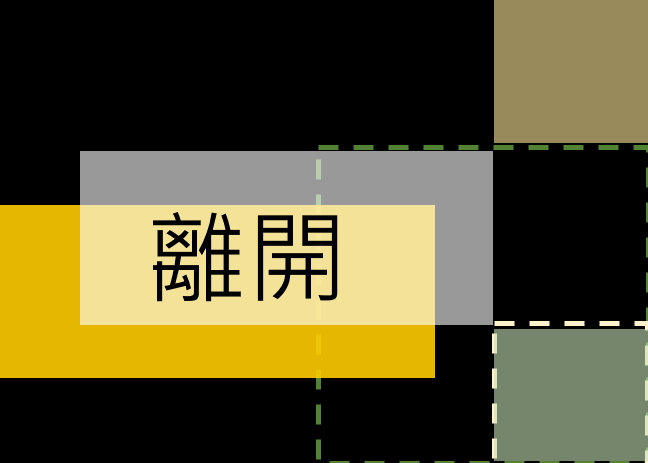
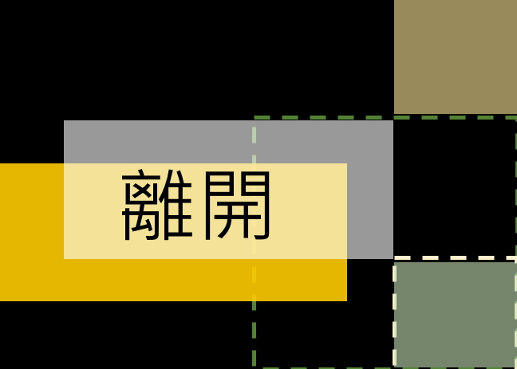

恭喜你/妳完成這場文字實驗來到這裡! 接下來，只要把這個遊戲分享到臉書(設定公開)， 並記得Hashtag #我說，囈起來吧 就有機會獲得一整個、八吋的——「提拉米蘇」噢! 之後也請關注藝術季的裝置藝術， 從全幅的視野，觀看故事一路串接、變化的過程。 再次感謝你/妳的蒞臨及加入!!!
3/22-4/2、4/3-4/18會在粉專發文時各抽出兩個提拉米蘇，4/19-4/26會再抽一個，請大家動動手指、多多分享
 
